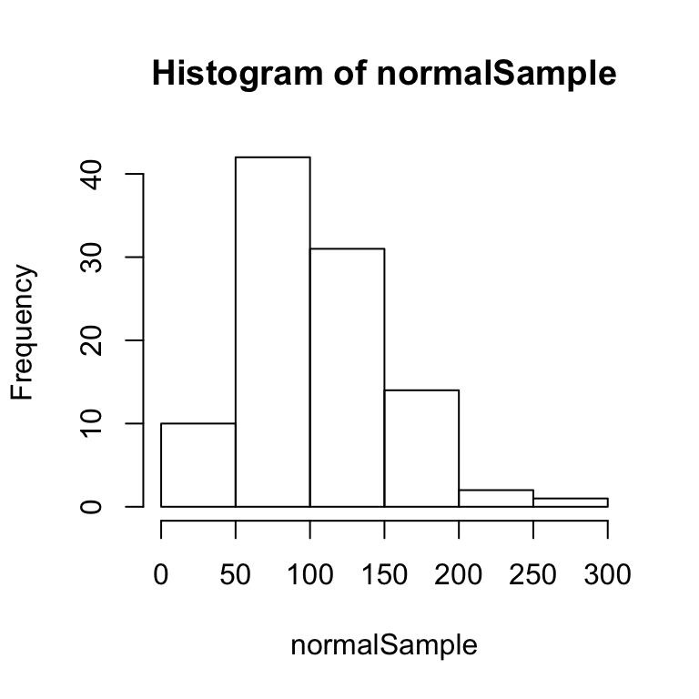
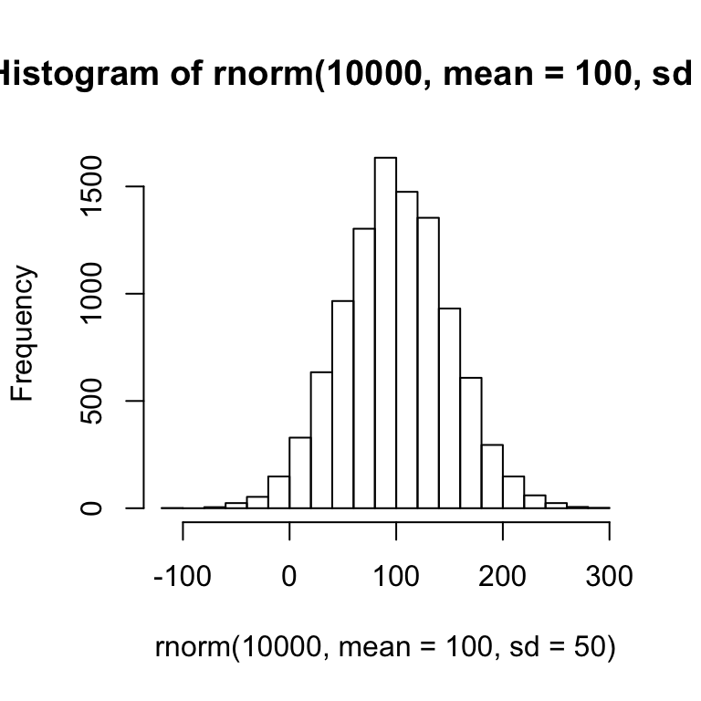
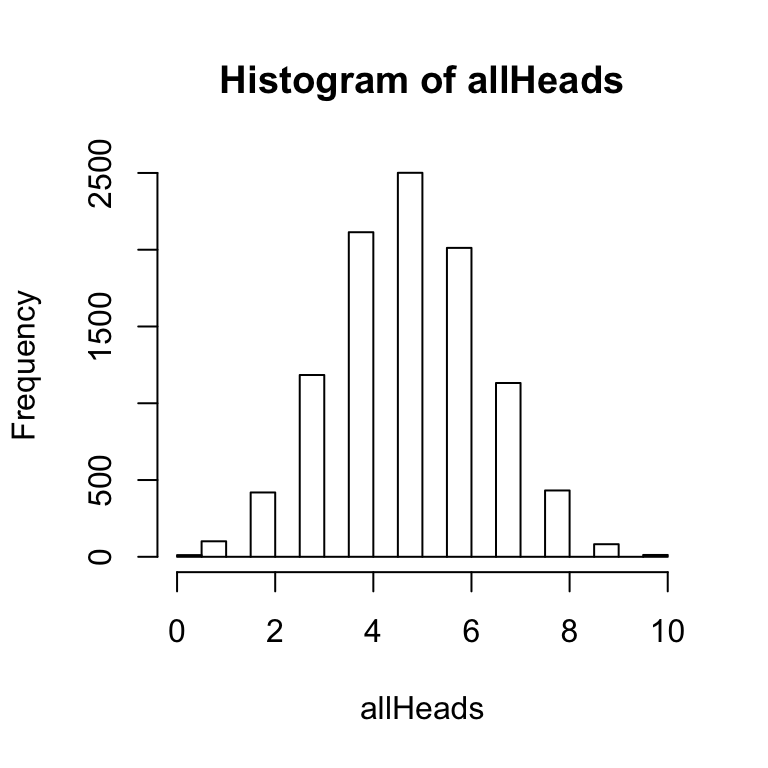
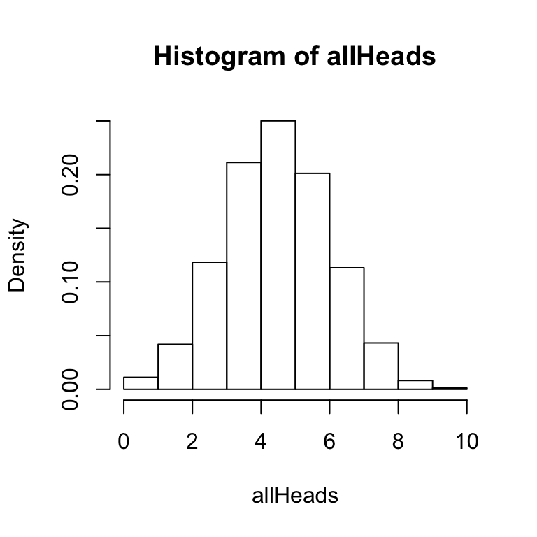
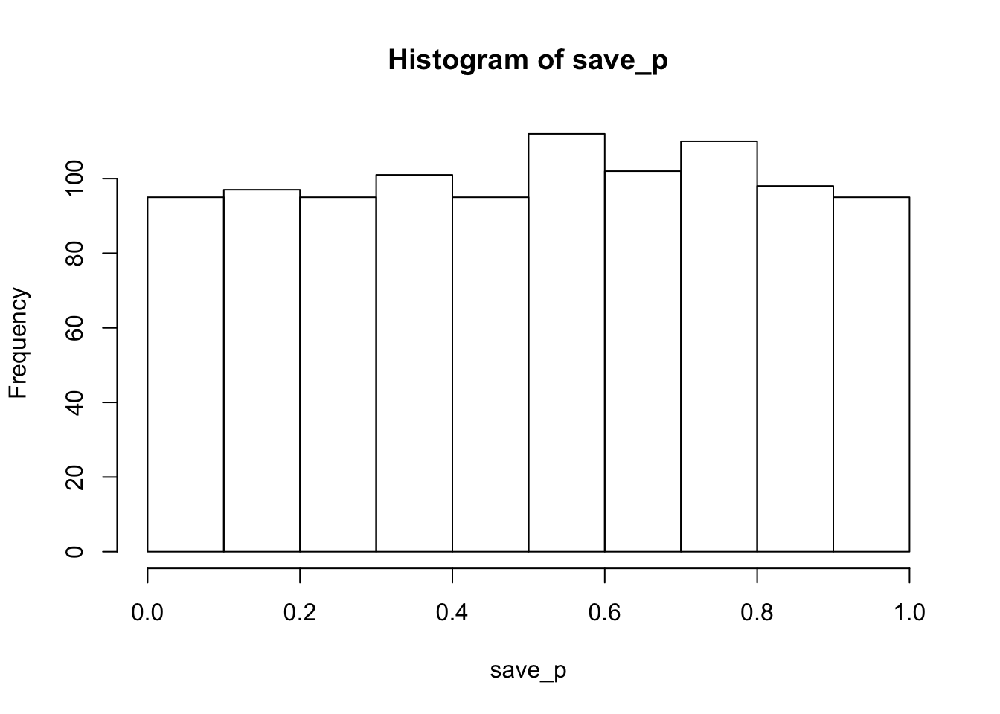
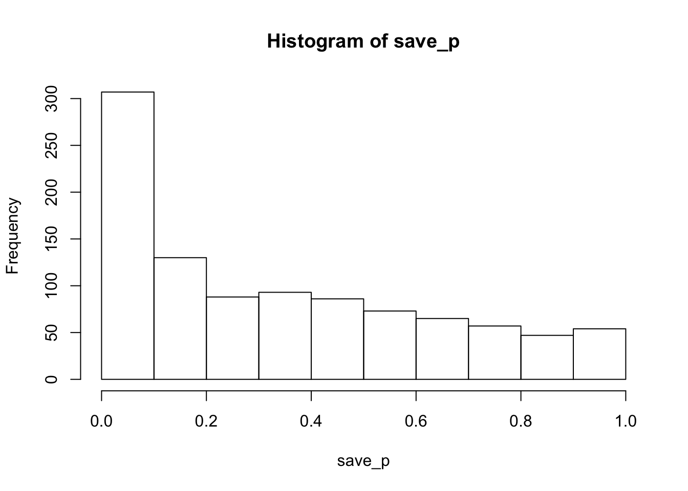
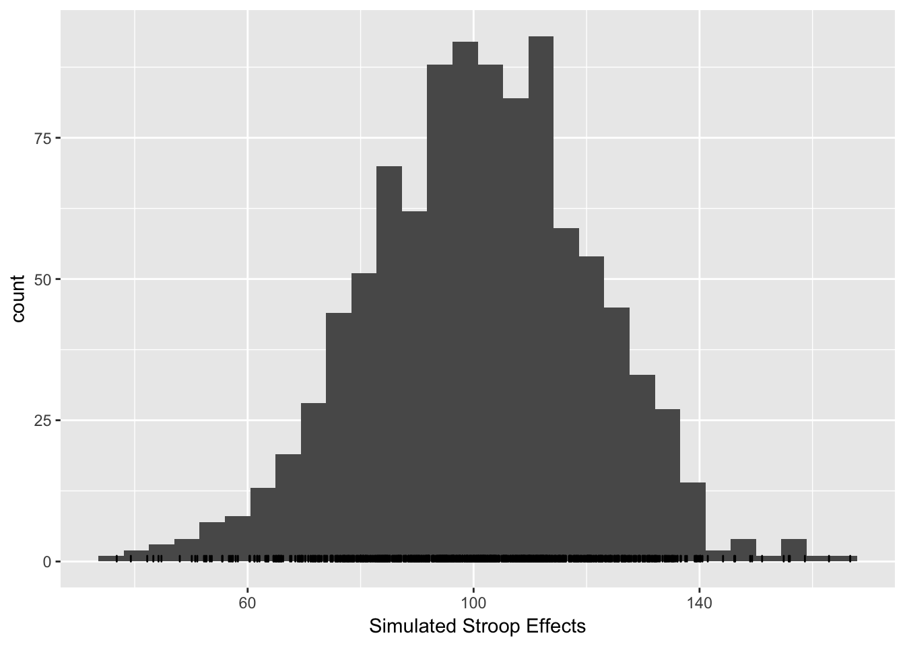
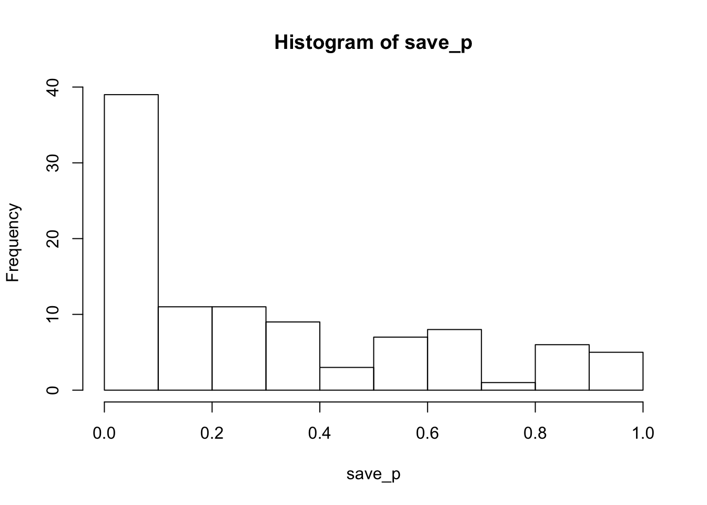

Chapter 5 Simulating and Analyzing Data in R
5.1 Creating a sample distribution
R has several built-in functions for sampling from different kinds of distributions. This makes it very easy to create simulated data. You can access these functions by typing “distribution” into R’s help. Because all of the examples involving simulating data will also involve sampling from distributions, it is worth spending some time on sampling from different distributions.
5.1.1 Sampling random numbers (uniform distribution)
R generate lists of random numbers between a minimum and maximum value. One definition of a random number is the idea of a uniform distribution. In a uniform distribution, all of the possible numbers in the range have an equal chance of occurrence. The following code samples 100 numbers from the range between 0 and 100, using the runif function.
The syntax for runif is:
runif(n, min = 0, max = 1)n is the number of samples. The min and max are the lower and upper limits of the distribution. Here is the runif function in action.
RandomNumbers <- runif(100, min = 0, max = 100)Typing the above line into the terminal will sample 100 numbers betwen 0 and 100 and place them into the variable named RandomNumbers. If you then type RandomNumbers into the terminal and press enter, you will see the contents (all of the 100 numbers) displayed in the R terminal. By changing the values in the function you can make your sample of numbers any size, and make the range any size.
RandomNumbers## [1] 21.5385069 24.1217537 5.5205319 98.6914350 56.0482205 19.0834504
## [7] 41.5542824 9.0681762 86.2728300 19.7900222 51.1716209 31.8495827
## [13] 61.1380349 0.6130128 47.3266298 64.1195175 75.2347539 44.9230373
## [19] 1.8672902 80.5226092 73.2443550 42.2966262 72.4051937 63.7460291
## [25] 44.5798928 13.3126147 0.6476694 53.1629358 48.4643196 12.5848893
## [31] 77.0326327 9.0183387 31.1804438 16.0659276 31.8138681 31.2511057
## [37] 2.2382184 10.6997486 2.2110644 81.4859002 0.6963449 92.6043166
## [43] 43.0952458 97.9367697 30.3246824 11.0857920 5.7007622 76.9447100
## [49] 31.5510164 81.9969214 47.8161891 20.2825969 10.5798439 57.0234205
## [55] 5.1219866 51.8180070 79.5934065 76.7076199 97.6941437 26.8736460
## [61] 10.2261277 99.2236801 6.9796426 71.1325564 59.4318171 3.2587463
## [67] 57.7267511 87.0873878 62.1778032 73.6653679 53.6131297 11.4827671
## [73] 54.9507030 0.9911769 9.0063479 29.3172139 80.2523126 86.2994477
## [79] 86.6863397 87.7245990 69.2522622 50.7745496 78.8257404 90.4993603
## [85] 23.2893591 51.6032850 67.7350153 84.4415316 94.5819981 93.6330210
## [91] 69.5714108 15.3915163 36.9836267 21.0659561 57.5681849 92.2497975
## [97] 44.5136476 5.3229517 69.7897812 86.3212093It is also very easy to view these numbers graphically. For example, you might to see if your sample actually looks like a uniform distribution. One way to do this would be to create a histrogram that shows the frequency of each number according to different bin sizes (e.g., frequency of numbers between 0 and 10, 11 and 20, and so on). If the sample is a uniform distribution, then the bars of the histogram ought to be approximately the same height (e.g., flat and uniform). A histogram can be created using the function hist.
hist(RandomNumbers)
Figure 5.1: Histogram of small sample of random numbers
Notice that some of the bars are higher than others, but overall the distribution is relatively flat and uniform. The fact that the distribution is not perfectly uniform shows that a sample distribution does not always look exactly like the parent distribution. This variability in the sample is due to chance. The effect of chance can be reduced by taking a larger sample. For example, the above code could be modified to sample 10,000 numbers rather than 100 numbers. This larger sample ought to produce a histogram that shows a more flat and uniform distribution. An example of a histogram for such a sample is shown below:
RandomNumbers <- runif(10000, min = 0, max = 100)
hist(RandomNumbers)Figure 5.2: Histogram of large sample of random numbers
There is still some variability in the height of the bars, but overall this larger sample appears to have a more flat and uniform distribution. Again, this means that each of the numbers in the distribution have an equal chance occurrence. All of the other distributions covered here involve non-uniform distributions, where each value in the population has different likelihoods of occurrence.
5.1.2 Sampling from a normal distribution
The normal distribution (or bell-curve) can be sample by using the function rnorm. The syntax for rnorm is:
rnorm(n, mean = 0, sd = 1)n is the number of samples, the mean is center of the distribution, and sd is the standard deviation of the distribution.
Let’s take 100 samples from a normal distribution with mean =100, and sd = 50, and plot the result in a histogram.
normalSample <- rnorm(100, mean = 100, sd = 50)
hist(normalSample)
The above histogram shows a bell-like curve typical of a normal distribution. If we take a much larger sample of 10,000 numbers, the bell-like curve will become even more apparent.
hist(rnorm(10000, mean = 100, sd = 50))
5.1.3 Other distributions
R has functions for many other different kinds of distributions, including exponential, power, weibull, and many others. You can find the functions for these distributions in the help section. We will use the normal distribution for the tutorials here.
5.2 Simulating a coin toss
If you flip a fair coin 10 times, what are chance that you get 5 heads and 5 tails? What are the chances that you get 4 heads and 6 tails? What are the chances of the other possible combinations? We could figure out the answer mathematically, or we could use R to simulate the results of a coin toss. This simulation will demonstrate the use of loops in R. If you want to give yourself a challenge, which you should, then stop here and try to figure out how to solve this problem yourself before reading on.
The strategy for the simulation will involve the following steps. 1) flip a coin 10 times, 2) count the number of heads, and save the result, 3) repeat steps 1 and 2 several thousand times. Step 3 will produce a distribution showing how many times 1 heads, 2 heads, 3 heads, and so on occurred when a coin is flipped 10 times.
We already know how to sample from a uniform distribution, so let’s apply this knowledge to simulate flipping a coin 10 times. We can sample 10 numbers from a distribution between 0 and 1. Then we can evaluate each number. If it is <=.5 we will call it a tails, and >.5 a heads.
coinToss <- runif(10, min=0, max=1)Then, we can use the round function to convert the decimal values into 0s or 1s.
coinToss <- round(coinToss)Then, we can use the sum function to yield the total number of heads.
totalHeads <- sum(coinToss)In fact, all of these operations could be done on one line in R.
totalHeads <- sum(round(runif(10, min = 0, max = 1)))The next step is to use a loop in R to simulate a large number of cases where a coin is flipped 10 times, store the results of each set of flips, and then plot the histogram.
allHeads <- c()
for (i in 1:10000) {
totalHeads <- sum(round(runif(10, min = 0, max = 1)))
allHeads <- c(allHeads,totalHeads)
}
hist(allHeads) The above histogram shows the frequency of getting 0, 1, 2, 3 and so on heads out of 10 coin flips for 10,000 simulations.
The histogram function has an option to graph a probability density function as follows:
hist(allHeads,freq=FALSE)The hist function has several options that you can configure. Notice that the two histograms above have gaps between the bars. For this histogram, R has automatically created bins of size .5. So, it is attempting to produce a bar at 0, .5, 1, 1.5, 2, and so on. The size of the bin is called breaks and can be set by the user. In this simulation there are 11 possible outcomes (0,1, 2, 3, 4,5 6, 7, 8, 9, or 10 heads), so it makes sense to set the breaks to 11.
hist(allHeads, freq = FALSE, breaks = 11)
A few other points are worth mentioning about the hist function. It is possible to save the results of the hist function to a variable or object. For example, we could use:
x<-hist(allHeads, freq = FALSE, breaks = 11)This line creates a variable x, and saves the results of the hist function to x. The variable x now contains the numerical details of the histogram. You can inspect these by typing x into the terminal and pressing enter. You should see a result like following:
x## $breaks
## [1] 0 1 2 3 4 5 6 7 8 9 10
##
## $counts
## [1] 112 419 1184 2114 2501 2012 1132 432 82 12
##
## $density
## [1] 0.0112 0.0419 0.1184 0.2114 0.2501 0.2012 0.1132 0.0432 0.0082 0.0012
##
## $mids
## [1] 0.5 1.5 2.5 3.5 4.5 5.5 6.5 7.5 8.5 9.5
##
## $xname
## [1] "allHeads"
##
## $equidist
## [1] TRUE
##
## attr(,"class")
## [1] "histogram"Each of the variables with a $ represent different components of the histogram. We can see that the breaks or bins are divided equally between 0 and 10, we can see the raw counts of number of heads in each bin, and we can see the probabilities for each number of heads in the density variable. Each of these variables can be listed individually.
x$breaks
x$counts
x$densityThe above lines of code show how to output each of the variables contained within the object x that is storing the results of the histogram. This basic idea will apply to data frames that will be encountered later when simulating more complex experimental designs.
5.3 t-test:Data Simulation and Analysis
5.3.1 Simulating a one-sample t-test
The purpose of a one-sample t-test is to determine whether the mean of a sample is statistically different from a population mean. Simulating the data simply involves taking some number of samples from a distribution, and then running a t-test to determine if the mean of the sample if different some other mean.
Consider simulating the test scores from a class of 10 students who completed a true/false quiz. Each of the students will have a percentage on their test. So, their test scores could range between 0 and 100%. One question to ask of these test scores is whether they are on average different from chance. If all of the students were guessing, the mean of all of the test scores should be not be statistically different from 50. If the students performed above chance then the mean of their scores should be significantly above 50. If we assume that the test scores are distributed normally, then it is possible to simulate 10 scores using the now familiar rnorm function (to sample from the normal distribution.
Let’s create a sample that assumes the students were guessing. This sample will have 10 scores, with a mean of 50. Let’s set the standard deviation to 20.
testScores <- rnorm(10, mean = 50, sd = 20)The above line of code will sample 10 numbers from the normal distribution above. However, there is a potential problem that needs to be addressed. It is possible for the rnorm function to sample numbers larger than 100 and smaller 0. These would be unlikely extreme values that are several standard deviations away from the mean, nevertheless they could be included in the sample. To address this problem, we can use logical operators in R to find and replace any numbers larger than 100 with the value 100, and any number smaller than 0 with the value 0.
testScores[testScores > 100] <- 100
testScores[testScores < 0] <- 0Now the variable testScores will only contain numbers between the range 0-100.
One first question is to determine the mean of sample. Use the mean function.
mean(testScores)## [1] 46.06487The next step is to perform a one-sample t-test to determine if the mean of the sample if statistically different from 50. A one-sample t-test can be computed using the t.test function.
t.test(testScores,mu=50)##
## One Sample t-test
##
## data: testScores
## t = -0.56472, df = 9, p-value = 0.5861
## alternative hypothesis: true mean is not equal to 50
## 95 percent confidence interval:
## 30.30155 61.82818
## sample estimates:
## mean of x
## 46.06487In the above, mu refers to the population mean. Most likely the t-test will return a non-significant p-value. This makes sense because the sample was taken from a distribution with a mean of 50, so the sample mean should not be different from 50. However, because the number of samples was small (only 10), it is possible by chance alone to find a significant result. Let’s create a different sample of test scores with a mean of 80, and run a one-sample t-test.
testScores <- rnorm(10, mean = 80, sd = 20)
testScores[testScores > 100] <- 100
testScores[testScores < 0] <- 0
t.test(testScores, mu = 50)##
## One Sample t-test
##
## data: testScores
## t = 9.8832, df = 9, p-value = 3.946e-06
## alternative hypothesis: true mean is not equal to 50
## 95 percent confidence interval:
## 74.87617 89.64421
## sample estimates:
## mean of x
## 82.26019In this case, the t-test will usually return a significant result, and this makes sense because the sample was drawn from a distribution with a mean of 80, not 50. However, even though we sampled from a distribution with mean 80, it is possible by chance alone that the t-test will return a non-significant result. The main factors that influence whether or not a one-sample test returns a significant result are: 1) the size of the difference between the sample and population mean, 2) the number of subjects or scores in the sample, 3) the variance of the sample. Larger differences, larger number of subjects, and smaller variances all lead to significant differences. Smaller differences, smaller number of subjects, and larger variance all lead to non-significant differences.
5.3.2 Simulating an independent samples t-test (two groups, between-subjects)
The independent samples t-test is used to compare the differences between two groups of scores, specifically for between-subjects designs.
Consider a simple reaction time experiment where participants are asked to detect the onset of a light as fast as possible. In this experiment one group of 20 subjects performs the task after drinking alcohol. As well, a control group of 20 different subjects performs the task without drinking alcohol. The prediction is that mean reaction time should be slower for the alcohol group than the control group.
To simulate the data we need to create two samples of 20 fictitious reaction times, one for the alcohol group and one for the control group, and then perform an independent samples t-test. When creating the samples for each group it is important to set the means of the sample distribution to reflect the predictions of the design. The choice of means and standard deviations is somewhat arbitrary, and requires educated guessing. When simulating the data from an existing experiment, a good educated guess is the means and standard deviations reported in the manuscript. In this case, the particular numbers are chosen based on the fact that normal reaction times in a simple detection task are around 150 ms. We will use the rnorm function to create simulated reaction times.
Alcohol <- rnorm(20, mean = 250, sd = 100)
Control <- rnorm(20, mean = 150, sd = 100)Reaction times have a lower limit of 0ms, and no upper limit. So, it is important to ensure that none of the numbers in each of the reaction time samples are smaller than zero.
Alcohol[Alcohol < 0] <- 0
Control[Control < 0] <- 0The next step is to conduct the independent samples t-test. This is done again using the t.test function (note: the syntax is slightly different from the one-sample test).
t.test(Alcohol,Control)##
## Welch Two Sample t-test
##
## data: Alcohol and Control
## t = 3.1488, df = 37.951, p-value = 0.00319
## alternative hypothesis: true difference in means is not equal to 0
## 95 percent confidence interval:
## 31.61263 145.45979
## sample estimates:
## mean of x mean of y
## 262.6054 174.0692Note the title of the t-test is called the Welch Two Sample t-test. This is the default t-test in R. If you were to run a t-test on the same scores in excel or SPSS, you find slightly different values. This is because the Welch test involves a statistical correction. It is possible to get the standard student’s t-test by setting the var.equal parameter as follows:
t.test(Alcohol,Control, var.equal = TRUE)##
## Two Sample t-test
##
## data: Alcohol and Control
## t = 3.1488, df = 38, p-value = 0.003187
## alternative hypothesis: true difference in means is not equal to 0
## 95 percent confidence interval:
## 31.61506 145.45736
## sample estimates:
## mean of x mean of y
## 262.6054 174.0692As you can see the results of the different versions of the t-tests are small. But, it is still a good idea to know which t-test you are performing. For all future t-tests in this tutorial, we will use the standard version, and always remember to set var.equal = TRUE. The t.test function has several other parameters that can be set (e.g., running a one vs. two-tailed test). These options can be found by looking up t.test in R help.
5.3.3 Simulating a paired samples t-test (two conditions, within-subjects)
A paired samples t-test is used for comparing data from two conditions in a within-subjects design (the same subjects contribute data to both of the conditions).
Imagine a learning experiment where 20 participants are asked to learn to type on a new computer keyboard with all of the keys re-arranged. They spend 1 hour practicing on day 1, and then 1 hour practicing on day 2. The prediction is that typing speeds will become faster with practice. So the mean typing speeds should be slower on day 1 than day 2. One measure of typing speed is words per minute. Skilled typists can type on average 65 WPM and up to over 100-200 WPM. The participants in this experiment will be starting from scratch, so let’s assume the mean WPM on day 1 will be around 20, and that they will make modest improvements to around 30 WPM on day 2. First, create two samples of 20 scores reflecting these predictions using rnorm.
day1<-rnorm(20, mean = 20, sd = 5)
day2<-rnorm(20, mean = 30, sd = 5)These scores both have a lower limit of 0, so let’s ensure that all negative numbers are set to 0.
day1[day1<0]<-0
day2[day2<0]<-0Next, look at the means.
mean(day1)## [1] 19.04195mean(day2)## [1] 29.85374Finally, compute the paired-samples t-test using the t.test function. This will be the same as before, except the option for a paired test will be set to TRUE.
t.test(day1, day2, var.equal=TRUE, paired=TRUE)##
## Paired t-test
##
## data: day1 and day2
## t = -7.2551, df = 19, p-value = 6.934e-07
## alternative hypothesis: true difference in means is not equal to 0
## 95 percent confidence interval:
## -13.930894 -7.692699
## sample estimates:
## mean of the differences
## -10.81185.3.4 Generality of the t-test examples
The above examples illustrate specific cases of simulating and analyzing data for one-sample, independent sample, and paired-sample t-tests. The code can be extended to simulate data for any kind of experiment or set of data that should be analyzed by these tests. The only changes that need to be made are the names of the variables, and the predictions for the number of subjects, and means, standard deviations, or other parameters of the sampling distribution chosen to model the data.
5.4 Formatting data in R for more complex designs
The remaining portion of this tutorial covers simulating and analyzing data for between and within-subjects single factor designs, multi-factor designs, and mixed designs. All of these simulations will use the aov function to run ANOVAs on the simulated data. The aov function, like many other statistical functions in R, requires the data to be formatted in a specific fashion known as long-format. The data should also be stored in a particular kind of variable known in R as a data frame. Before continuing, it is worth discussing this kind of data formatting because it is fundamental to all of the remaining simulations. A complete understanding of formatting data in R will allow the user to create simulated data for most any design and conduct appropriate analyses on the simulated data.
Experimental designs involve manipulations and measurements. The manipulations are described by independent variables, and the measurements refer to dependent variables. Every independent variable has at least two levels, and possibly many more. In balanced designs there is one measurement (DV) for each of the levels of the independent variables. Thus, in order to represent the results of an experiment, it is necessary to organize the data so that the measurement for each level of each independent variable can be identified. Data is typically organized either in wide or long-format.
Here is an example of a wide-format organization for a single-factor design with 3 levels. It is a within-subjects design with 5 subjects.
Subjects L1 L2 L3
1 5 5 10
2 7 6 10
3 10 8 10
4 9 10 9
5 9 6 8The wide-format has four columns. The first column is for Subjects, and the remaining columns are for each of the levels of the independent variable. Each of the rows under the Subjects column refer to each of the 5 subjects, and the numbers under the columns Level 1 to 3 represent the measurements or dependent variable. This format perfectly preserves each of the measurements and assigns each measurement to a particular subject in a particular condition.
Here is an example of the same data organized in long-format.
Subjects IV DV
1 L1 5
2 L1 7
3 L1 10
4 L1 9
5 L1 9
1 L2 5
2 L2 6
3 L2 8
4 L2 10
5 L2 6
1 L3 10
2 L3 10
3 L3 6
4 L3 9
5 L3 8A defining feature of long-format data is that the DV is stored down the rows of a single column. This can lead to very long tables of data, especially when the design has many subjects and IVs with numerous levels.
In the above example, there is a single column for the subjects factor, a single column for the IV factor, and a single column for the DV. There is an important difference between the columns representing factors (Subject and IV) and the column representing the data or DV. The difference is that all of the numbers in the DV represent unique observations in each of the conditions. However, notice that terms in the rows of the subject and IV columns repeat. For the subject column, the numbers 1 to 5 are repeated three times. This is necessary because each of the subjects participates in each of the three conditions of the IV. Notice also that the terms for Level1, 2 and 3 are repeated 5 times each (once for each subject).
For each of the following simulations we will be constructing our own sets of data in long format. For each simulation it will be necessary to determine the total number of subjects, the total number of levels for each IV, and the total number of observations of the DV. These constraints will be used to create and organize each of the data sets.
5.5 Single Factor ANOVAs: Data-Simulation and Analysis
5.5.1 Simulating data for a one-way within subjects ANOVA with 3 levels
Let’s continue with the example of a simple practice study having participants learn to type on a new keyboard. In the paired sample t-test, participants practiced for one hour on day 1 and day 2. Let’s extend this design by including a day 3. Imagine the design involves 20 participants, and the DV is words per minute (WPM).
The first question is to determine the number of observations of the DV. The design has one IV with 3 levels, and 20 participants. Each participant contributes data to each of the levels. Thus, the number of observations is 3 x 20 = 60. This means that the column representing the DV will have 60 total numbers, one for each subject in each condition.
The first step is to simulate the data for each of the days. We can use the same formulas used from the paired sample t-test.
day1 <- rnorm(20, mean = 20, sd = 5)
day2 <- rnorm(20, mean = 30, sd = 5)
day3 <- rnorm(20, mean = 40, sd = 5)Don’t forget to set the negative numbers to 0.
day1[day1 < 0] <- 0
day2[day2 < 0] <- 0
day3[day3 < 0] <- 0We now have three variables representing the mean words per minute for each subject for each day of practice. We can assume that the first number in each variable represents subject 1, the second number subject 2, and so on.
The next step is to combine each of these variables into a single variable that will eventually become a column representing all of the observations for the DV. This is simple in R.
WPM <- c(day1,day2,day3)If you type the newly created variable WPM into the terminal and press enter, you will see a single list of 60 numbers. As the programmer, you know that the first 20 numbers represent the DV values for subjects 1-20 on day1, the 21-40th numbers represent the DV values for subjects 1-20 on day 2, and the 41-60th numbers represent the DV values for subjects 1-20 on day 3.
The next step is to create a variable that represents the subject factor. This variable should list the numbers 1-20 three times in a row. The R function seq is a convenient tool
seq(1,20)## [1] 1 2 3 4 5 6 7 8 9 10 11 12 13 14 15 16 17 18 19 20Use seq to make the list of 1-20 repeat three times.
Subjects <- c(seq(1,20), seq(1,20), seq(1,20))If you type Subjects into the terminal you will see the numbers 1-20 listed three times. Alternatively, you could combine the rep and seq functions.
Subjects<-rep(seq(1,20),3)The Subjects variable is currently composed of 60 numbers. We will eventually be using the aov function to perform an ANOVA on our simulated data, and this function requires that the subject variable be treated as a factor in the ANOVA. This requires that we transform the Subjects variable into a different type of variable, that has the factor class. The current class of Subjects is integer. You can determine the class of a variable by:
class(Subjects)## [1] "integer"We can change Subjects into a factor class by:
Subjects<-factor(Subjects)Now if you look at class(Subjects), you should see that is "factor". If a variable in R contains numbers it is not automatically given the factor class, so that class must be assigned in the script.
We now have a variable called WPM that represents the DV, and a variable Subjects that represents the subject factor. The remaining factor is the IV for practice. This has three levels, day1, day2, and day3. Given the way we have organized the data in the WPM variable, we know that the first 20 numbers are for day1, the second 20 numbers are for day 2, and the final set of 20 numbers are for day 3. Thus, we need to create a variable with the term day1 listed 20 times, followed by the term day2 listed 20 times, and then the term day3 listed 20 times. It is easy to do this using the function rep.
rep("day1",20)## [1] "day1" "day1" "day1" "day1" "day1" "day1" "day1" "day1" "day1" "day1"
## [11] "day1" "day1" "day1" "day1" "day1" "day1" "day1" "day1" "day1" "day1"The Practice factor can be created in the following way:
Practice <- c(rep("day1",20), rep("day2",20), rep("day3",20))If you now type Practice into the terminal you should see a list of 60 items, with day1 20 times, day2 20 times, and day3 20 times.
We have now created variables for every aspect of the design (Subjects, Practice, WPM). The next step is to combine these variables into a long-format table. This is done using the data.frame function. Data needs to be converted into a data frame format before using the aov function to compute the ANOVA. Fortunately, this is very easy. Let’s create the data frame and put it into a new variable called AllData
AllData <- data.frame(Subjects,Practice,WPM)If you type AllData into the terminal, then you should see all of the simulated data presented in a long-format table. The first column will show the subject variable, with the numbers 1-20 repeated three times. The second column should show the Practice variable, with the names of each of the levels repeated 20 times each, and the third column should show the WPM variable, with 60 total observations.
The final step is to perform the one-way ANOVA. This will provide a test to determine whether there is a significant difference between the levels of the practice factor. Luckily, once the data has been formatted into a data frame, the ANOVA can be computed in one line of code using the aov function. Just like we did with the hist function, let’s store the results of aov function into a variable called ANOVAresults.
ANOVAresults <- aov(WPM~Practice + Error(Subjects/Practice), AllData)Next, use the summary function to print the results of ANOVA to the terminal.
summary(ANOVAresults)##
## Error: Subjects
## Df Sum Sq Mean Sq F value Pr(>F)
## Residuals 19 648.7 34.14
##
## Error: Subjects:Practice
## Df Sum Sq Mean Sq F value Pr(>F)
## Practice 2 4441 2220.6 120.9 <2e-16 ***
## Residuals 38 698 18.4
## ---
## Signif. codes: 0 '***' 0.001 '**' 0.01 '*' 0.05 '.' 0.1 ' ' 1model.tables(ANOVAresults,"means") ## Tables of means
## Grand mean
##
## 29.31373
##
## Practice
## Practice
## day1 day2 day3
## 18.20 30.59 39.16Here is all the code for the simulation in one complete script:
day1<-rnorm(20, mean = 20, sd = 5)
day2<-rnorm(20, mean = 30, sd = 5)
day3<-rnorm(20, mean = 40, sd = 5)
day1[day1<0]<-0
day2[day2<0]<-0
day3[day3<0]<-0
WPM<-c(day1,day2,day3)
Subjects<-c(seq(1,20), seq(1,20), seq(1,20))
Subjects<-factor(Subjects)
Practice<-c(rep("day1",20), rep("day2",20), rep("day3",20))
AllData<-data.frame(Subjects,Practice,WPM)
ANOVAresults<-aov(WPM~Practice + Error(Subjects/Practice), AllData)
summary(ANOVAresults)
model.tables(ANOVAresults,"means") This code can also be rewritten in a more compact form, for example:
WPM<-rnorm(60,c(20,30,40),5)
WPM[WPM<0]<-0
Subjects<-factor(rep(seq(1,20),each=3))
Practice<-rep(c("day1","day2","day3"),20)
AllData<-data.frame(Subjects,Practice,WPM)
ANOVAresults<-aov(WPM~Practice + Error(Subjects/Practice), AllData)
summary(ANOVAresults)
model.tables(ANOVAresults,"means") 5.5.2 Simulating data for a one-way between subjects design with 3 levels
Consider the following between-subjects design with 60 subjects. The task is a memory experiment. Participants in the encoding phase read a list of 20 words, and are given a later test to recall as many words from the list as possible. The IV is the amount of time between the encoding phase and the test phase, and termed Delay. Group 1 is given the memory test immediately after reading the word list. Group 2 is given the memory test 1 hour after reading the word list. Group 3 is given the memory test 2 hours after reading the word list. Each group is composed of 20 different subjects. The prediction is that memory recall performance should decrease with longer delays. Group 1 should perform better than Group 2. And Group 2 should perform better than Group 3.
The DV could be the number of words recalled, this number would range between 0 and 20. There are 20 subjects and 2 conditions, so the DV should have 60 observations. The variables for the DV, and Subjects and Delay factors can be constructed in a similar manner to the previous example. The major difference being that the Subjects factor will contain the numbers 1-60, reflecting the fact that 60 different subjects completed the experiment. The following code creates the complete data frame and runs the ANOVA.
Recall<-c(rnorm(20,mean=17,sd=3),rnorm(20,mean=15,sd=3),rnorm(20,mean=12, sd=3))
Recall[Recall>20]<-20
Recall[Recall<0]<-0
Subjects<-factor(seq(1,60))
Delay<-c(rep("Immediate",20), rep("1Hour",20), rep("2Hour",20))
AllData<-data.frame(Subjects,Recall,Delay)
ANOVAresults<-aov(Recall~Delay, AllData)
summary(ANOVAresults)
model.tables(ANOVAresults,"means")5.6 Using the aov function for within or between-subjects designs
The aov function is used for within, between and mixed design ANOVAs. The aov formula has the following syntax:
aov(formula,dataframe)dataframe refers to the name of the variable containing the data. The formula parameter defines the nature of the ANOVA. Here are some examples of the formula for different single and multi-factor between subject designs. The term DV will refer the name of the dependent variable, and IV for the name of the independent variable.
5.6.1 Between subjects ANOVA formulas
5.6.1.1 Single-factor design
aov(DV~IV, dataframe)5.6.1.2 2 IVs
aov(DV~IV1*IV2, dataframe)5.6.1.3 3 IVs
aov(DV~IV1*IV2*IV3, dataframe)The main differences between these formulas are the additional IV variables. Each additional variable is multiplied to the others.
The aov formula changes in an important way for within-subjects designs. This is because within-subjects designs use an error term that incorporates the Subjects variable. This error term needs to be explicitly defined in the aov formula. It is also important that the subjects variable in the dataframe is defined as a factor. Here are some examples:
5.6.2 Within subjects ANOVA formulas (all factors within)
5.6.2.1 Single-factor design
aov(DV~IV + Error(Subjects/IV), dataframe)5.6.2.2 2 IVs
aov(DV~IV1*IV2 + Error(Subjects/IV1*IV2), dataframe)5.6.2.3 3 IVs
aov(DV~IV1*IV2*IV3 + Error(Subjects/IV1*IV2*IV3), dataframe)5.6.3 Mixed design ANOVAs with between and within factors
For these examples IVB will refer to between subject variables, and IVW will refer to within subjects variables
5.6.3.1 One between IV and one within IV
aov(DV~IVB*IVW + Error(Subjects/IVW), dataframe)5.6.3.2 One between IV and two Within IVs
aov(DV~IVB*IVW1*IVW2 + Error(Subjects/(IVW1*IVW2), dataframe)5.6.3.3 Two between IVs and two Within IVs
aov(DV~IVB1*IVB2*IVW1*IVW2 + Error(Subjects/(IVW1*IVW2)+(IVB1*IVB2), dataframe)note: in this last example an additional error term is added for the interaction between the two between subject variables.
5.7 Simulating data for multi-factor designs
5.7.1 2x2 between subjects design
The following code assumes 20 subjects per group (80 total). IV1 has two levels. IV2 has two levels.
DV<-rnorm(80,c(100,200,300,400),sd=10)
IV1<-rep(c("level1","level2"),each=2,20)
IV2<-rep(c("level1","level2"),each=1,40)
AllData<-data.frame(DV,IV1,IV2)
ANOVAresults<-aov(DV~IV1*IV2, AllData)
summary(ANOVAresults)
model.tables(ANOVAresults,"means")5.7.2 2x2 within subjects designs
The following code assumes 20 subjects participating in each condition. IV1 has two levels. IV2 has two levels.
Subjects<-factor(rep(seq(1,20),each=4))
DV<-rnorm(80,c(100,200,300,400),sd=10)
IV1<-rep(c("level1","level2"),each=2,20)
IV2<-rep(c("level1","level2"),each=1,40)
AllData<-data.frame(DV,IV1,IV2)
ANOVAresults<-aov(DV~IV1*IV2 + Error(Subjects/(IV1*IV2)), AllData)
summary(ANOVAresults)
model.tables(ANOVAresults,"means")5.7.3 2x2 mixed design (1 within, 1 between)
The following code assumes 40 total subjects. 20 participate in each level of IVB, and all participate in each level of IVW. IVB has two levels, IVW has two levels
Subjects<-factor(c(rep(seq(1,40),each=2)))
DV<-rnorm(80,c(100,200,300,400),sd=10)
IVB<-rep(c("level1","level2"),each=2,20)
IVW<-rep(c("level1","level2"),each=1,40)
AllData<-data.frame(DV,IVB,IVW)
ANOVAresults<-aov(DV~IVB*IVW + Error(Subjects/(IVW)), AllData)
summary(ANOVAresults)
model.tables(ANOVAresults,"means")5.8 Power analysis and sample-size planning by Monte Carlo simulation
The above code blocks show examples of simulating data in a few different designs, and then analyzing the simulated data with an ANOVA. By repeating this process many times for any given design, we can estimate statistical properties of the design that should hold over the long run. For example, how often does the design produce a ‘significant’ (p<.05) effect? This can be estimated by running 1000s of independent simulations, computing and saving the p-value from each simulation, and then determining the proportion of p-values less than .05 from the distribution of simulated p-values. In principle, long-run expectations for any other statistic of a simulated design could be estimated in this way as well. In addition, design simulations can be constructed down to the level of individual trial data for individual subjects, which can aid in sample-size and cell-size planning. Some example monte-carlo simulations are presented below.
5.8.1 Monte-Carlo one-sample T-test Simulation
The following simulates 25 sample means from a normal distribution (mu=100, sd=10), and then conducts a one-sample t-test against the population mean of 100. This is equivalent to simulating the null. The simulation is repeated 1000 times, each time the observed p-value is saved.
sims_to_run<-1000
save_p <- vector(length=sims_to_run)
for(i in 1:sims_to_run){
sim_data <- rnorm(25,100,10)
t.out <-t.test(sim_data,mu=100)
save_p[i] <- t.out$p.value
}
hist(save_p)
proportion_sig<-length(save_p[save_p<.05])/sims_to_run
proportion_sig## [1] 0.048As expected, the histogram of simulated p-values is roughly uniform, indicating that all possible p-values are equally likely. In other words, chance would be expected to produce p<.05 about 5% of the time. The calculated proportion of significant values was 0.048. In general, as the number of simulated runs increases toward infinity, the estimated parameter should settle on it’s true expected value.
5.8.2 Monte-Carlo paired T-test Simulation
25 subjects, with expected mean 100 in Condition 1 and mean 110 in Condition 2, with standard deviation 30. This simulation includes a programmed difference of 10, so there is a true effect.
sims_to_run<-1000
save_p <- vector(length=sims_to_run)
for(i in 1:sims_to_run){
condition_1 <- rnorm(25,100,30)
condition_2 <- rnorm(25,110,30)
t.out <-t.test(condition_1,condition_2,paired=TRUE,var.equal = TRUE)
save_p[i] <- t.out$p.value
}
hist(save_p)
proportion_sig<-length(save_p[save_p<.05])/sims_to_run
proportion_sig## [1] 0.199The histogram of p-values is skewed left, so this design is more likely to produce p<.05 than not, but the statistical power (or proportion of significant simulations) is only 0.199.
To determine the number of subjects needed to achieve power = .8, you could fiddle with the number of subjects until you find the number, or you could add another loop to run multiple monte carlo simulations with difference numbers of subjects.
subject_numbers<-c(25,50,75,100,125,150,175,200)
power<-vector(length=length(subject_numbers))
for(subnum in 1:length(subject_numbers)){
sims_to_run<-1000
save_p <- vector(length=sims_to_run)
for(i in 1:sims_to_run){
condition_1 <- rnorm(subject_numbers[subnum],100,30)
condition_2 <- rnorm(subject_numbers[subnum],110,30)
t.out <-t.test(condition_1,condition_2,paired=TRUE,var.equal = TRUE)
save_p[i] <- t.out$p.value
}
power[subnum]<-length(save_p[save_p<.05])/sims_to_run
}
power_table<-data.frame(subject_numbers,power)
kable(power_table)| subject_numbers | power |
|---|---|
| 25 | 0.210 |
| 50 | 0.362 |
| 75 | 0.525 |
| 100 | 0.665 |
| 125 | 0.741 |
| 150 | 0.818 |
| 175 | 0.887 |
| 200 | 0.922 |
5.8.3 Monte-Carlo One-way Repeated Measures Simulation
The above simulations estimated individual subject sample means by drawing values directly from distributions. The individual trial data for each subject can also be simulated if desired. This can be useful for design planning as both the number of subjects and cell-size determine the power of the design. Depending on the situation, increasing the number of trials may do more for improving the sensitivity of the design than increasing the number of subjects, or vice-versa. To illustrate, the following example simulates individual trial data for subjects in a Stroop experiment. The retimes package is used to generate RT distributions.
Before simulating an entire experiment it is worth simulating a Stroop effect for a single simulated subject. This shows the variance of Stroop effects given programmed values for the mean difference between congruent and incongruent trials, values of mu, sigma, and tau for the base RT distributions, as well as number of trials.
library(retimes)## Reaction Time Analysis (version 0.1-2)library(ggplot2)
stroop_effects<-c()
n_trials <- 144
sim_mu <- 600
sim_sigma <- 80
sim_tau <- 150
congruency_effect <- 100
for(i in 1:1000){
CongruentRTs <- rexgauss(n_trials,mu=sim_mu,sigma=sim_sigma,tau=sim_tau)
IncongruentRTs <- rexgauss(n_trials,mu=sim_mu+congruency_effect,sigma=sim_sigma,tau=sim_tau)
stroop_effects <- c(stroop_effects,mean(IncongruentRTs)-mean(CongruentRTs))
}
qplot(stroop_effects)+xlab("Simulated Stroop Effects")+geom_bar(fill="white",color="black")## `stat_bin()` using `bins = 30`. Pick better value with `binwidth`. The histogram shows that under the simulated parameters, the programmed Stroop effect of 100ms can easily take a value -from 50 to 150. The variance in the simulated Stroop effect for a single subject is determined by the variance in the underlying RT distributions for the congruent and incongruent conditions.
The following simulation expands on the above to model multiple subjects in a Stroop experiment. We start with a minimum number of 10 trials per condition, in an Experiment with 20 subjects, and programmed Stroop effect of 50ms.
sims_to_run<-100
n_trials <- 10
sim_mu <- 600
sim_sigma <- 80
sim_tau <- 150
congruency_effect <- 50
n_subjects <- 20
save_p<-vector(length=sims_to_run)
for(i in 1:sims_to_run){
all_subjects<-data.frame()
for(sub in 1:n_subjects){
CongruentRTs <- rexgauss(n_trials,mu=sim_mu,sigma=sim_sigma,tau=sim_tau)
IncongruentRTs <- rexgauss(n_trials,mu=sim_mu+congruency_effect,sigma=sim_sigma,tau=sim_tau)
temp_subject <- data.frame(subject=rep(sub,n_trials*2),
condition=rep(c("Congruent","Incongruent"),each=n_trials),
RTs=c(CongruentRTs,IncongruentRTs))
all_subjects<-rbind(all_subjects,temp_subject)
}
mean_subject_data<-aggregate(RTs~subject*condition,all_subjects,mean)
aov.out<-summary(aov(RTs~condition+Error(subject/condition),mean_subject_data))
save_p[i]<-aov.out[[3]][[1]][[5]][1]
}
hist(save_p)
proportion_sig<-length(save_p[save_p<.05])/sims_to_runTith these minimum trial counts, the power is 0.26 to detect the Stroop effect. Estimated power will increase with increasing numbers of subjects and/or trials in the simulated design. The last simulation shows how power increases as function of increasing trial counts.
sims_to_run<-100
n_trials <- c(10,20,30,40,50,60,70)
sim_mu <- 600
sim_sigma <- 80
sim_tau <- 150
congruency_effect <- 50
n_subjects <- 20
save_p<-vector(length=sims_to_run)
proportion_sig<-vector(length=length(n_trials))
for(trials in 1:length(n_trials)){
for(i in 1:sims_to_run){
all_subjects<-data.frame()
for(sub in 1:n_subjects){
CongruentRTs <- rexgauss(n_trials[trials],mu=sim_mu,sigma=sim_sigma,tau=sim_tau)
IncongruentRTs <- rexgauss(n_trials[trials],mu=sim_mu+congruency_effect,sigma=sim_sigma,tau=sim_tau)
temp_subject <- data.frame(subject=rep(sub,n_trials[trials]*2),
condition=rep(c("Congruent","Incongruent"),each=n_trials[trials]),
RTs=c(CongruentRTs,IncongruentRTs))
all_subjects<-rbind(all_subjects,temp_subject)
}
mean_subject_data<-aggregate(RTs~subject*condition,all_subjects,mean)
aov.out<-summary(aov(RTs~condition+Error(subject/condition),mean_subject_data))
save_p[i]<-aov.out[[3]][[1]][[5]][1]
}
proportion_sig[trials]<-length(save_p[save_p<.05])/sims_to_run
}
kable(data.frame(n_trials,proportion_sig))| n_trials | proportion_sig |
|---|---|
| 10 | 0.33 |
| 20 | 0.58 |
| 30 | 0.65 |
| 40 | 0.78 |
| 50 | 0.82 |
| 60 | 0.94 |
| 70 | 0.95 |
5.9 Analysing data from a file
This tutorial comes with a folder containing several data files. All of these files are .txt files that you can open and view in any text editor. Each of the files has data formatted in a specific way, called long format. The first line of each file contains headers or names for each of the columns of data in the file. For example, The SingleFactor_Between.txt file contains 61 lines of text. The first few lines should like something like this (except the text file will not include the number signs).
AllData[1:5,]## Subjects IV1 DV
## 1 1 Group1 620.3559
## 2 2 Group1 661.4570
## 3 3 Group1 394.6609
## 4 4 Group1 382.1381
## 5 5 Group1 360.9547The Subjects column refers to individual subjects in the data file. Each number corresponds to a unique subject. The IV1 column refers to the single independent variable or factor in this data file. There are three levels: Group1, Group2, and Group3. If you scroll down the lines of the data file you will see that subjects 1-20 are associated with Group1, subjects 21-40 are associated with Group2, and subjects 41-60 are associated with Group3. The final column DV stands for the dependent variable, and the numbers in this column represent mean values for each subject in each condition.
5.10 Reading data into R
There are several ways to import data into R. We focus on using the read.table function (but see also scan). To use read.table you will need to tell R where it can find your data files. In R studio look at the bottom right panel, and find the “Files” tab. When you click on the “Files” tab you should see the current working directory. Use the file section to navigate to the folder on your computer that contains the data files. When you have succesfully done this you will see the data files listed in the bottom-right window. Now you want to set the current working directoy to this folder (that contains the data files). Choose the option “More”, listed underneath the “files” tab. You should see an option to “set as working directory”. Click this option. Now R will be able to find your data files.
The next step is to input the data file into a variable in R. If you have correctly set the working directory then type the second line of code into the R terminal on the bottom left window of R-studio, then press enter. The first line of code shows how the working directory can be set with a script.
AllData<-read.table("RFiles/SingleFactor_Between.txt",header=TRUE,sep="\t")You should now see a variable called AllData appear in the workspace (top right window). If you type AllData into the terminal and press enter, you should see R list your data file in the terminal.
5.11 Running an ANOVA for a single-factor design between-subjects design
We have already used the aov function to conduct ANOVAs on our simulated data sets. The same function is used to anlayse data inputted into R. In this case, the data file that we have inputted is already structured in long-format, and R reads the data in as a dataframe object. So, to conduct the ANOVA we simply need to write the following:
summary(aov(DV~IV1,AllData))## Df Sum Sq Mean Sq F value Pr(>F)
## IV1 2 101780 50890 4.405 0.0166 *
## Residuals 57 658449 11552
## ---
## Signif. codes: 0 '***' 0.001 '**' 0.01 '*' 0.05 '.' 0.1 ' ' 1In the above print-out, the Df column refers to degrees of freedom, Sum Sq refers to the sum of squares, Mean Sq refers to Mean squared error, F-value is the F-statistic, and Pr(>F) is the p-value.
We can see that the p-value is .0166, indicating significance. This means that at least one of the three groups is significantly different from the others. However, the ANOVA alone does not tell us either the means of each group, or which ones are significantly different from each other. This requires specific comparisons between levels.
The summary function does not provide descriptive statistics, so we are unable to see the means for each condition. One option to view the means is to use thethe aggregate function.
aggregate(DV~IV1,AllData,mean)## IV1 DV
## 1 Group1 489.6141
## 2 Group2 554.9691
## 3 Group3 588.8501It is worth pointing out that although the summary function does not immediately display the means for each condition, it does create a data structure that represents this information. And, the means can be found using model.tables in the following way.
aovResults<-aov(DV~IV1,AllData)
print(model.tables(aovResults,"means"),digits=6)## Tables of means
## Grand mean
##
## 544.4778
##
## IV1
## IV1
## Group1 Group2 Group3
## 489.614 554.969 588.850We see that the mean for Group 1 is numerically smaller than the mean for Group 2, which is numerically smaller than the mean for Group 3. We can conclude, based on the ANOVA, that the largest and smallest means are different from each other, so we know that the mean for Group 1 was significantly smaller than the mean for Group 3. We need to perform a follow-up t-test to determine whether Group 1 is different from Group 2, and yet another test to determine if Group 2 is different from Group 3.
The design is between-subjects, so the appropriate t-test is an independent samples t-test. We can conduct this test comparing groups 1 and 2 using the t.test function as follows:
t.test(AllData[AllData$IV1=="Group1",]$DV,AllData[AllData$IV1=="Group2",]$DV,var.equal=TRUE)##
## Two Sample t-test
##
## data: AllData[AllData$IV1 == "Group1", ]$DV and AllData[AllData$IV1 == "Group2", ]$DV
## t = -1.8763, df = 38, p-value = 0.06831
## alternative hypothesis: true difference in means is not equal to 0
## 95 percent confidence interval:
## -135.868485 5.158361
## sample estimates:
## mean of x mean of y
## 489.6141 554.9691We see that the p-value is p=0.06831, which is not <.05. So, Group 1 is not significantly different than Group 2.
We can run an additional t-test comparing Group 2 and Group 3 using the following:
t.test(AllData[AllData$IV1=="Group2",]$DV,AllData[AllData$IV1=="Group3",]$DV,var.equal=TRUE)##
## Two Sample t-test
##
## data: AllData[AllData$IV1 == "Group2", ]$DV and AllData[AllData$IV1 == "Group3", ]$DV
## t = -1.0867, df = 38, p-value = 0.284
## alternative hypothesis: true difference in means is not equal to 0
## 95 percent confidence interval:
## -96.99980 29.23777
## sample estimates:
## mean of x mean of y
## 554.9691 588.8501Again, we see that the difference is not significant (p=.284). So Group 2 is not significantly different from Group 3.
5.11.1 Prettier results using kable and broom
The results of anovas or t-tests aren’t appealing look to at when they are printed to the console, and often look cluttered when printed to a .pdf or .html file using Rmarkdown. The kable function from the package knitr, and the xtable function from the xtable package can help with improving the look and feel of ANOVA and other tables.
library(knitr)
library(xtable)
aov.out <- summary(aov(DV~IV1,AllData))
kable(xtable(aov.out),format='markdown')| Df | Sum Sq | Mean Sq | F value | Pr(>F) | |
|---|---|---|---|---|---|
| IV1 | 2 | 101780.0 | 50890.02 | 4.405401 | 0.0166327 |
| Residuals | 57 | 658448.8 | 11551.73 | NA | NA |
The results from t-tests can be prettified using broom
library(broom)
kable(tidy(t.test(DV~IV1,AllData[AllData$IV1!="Group1",], paired=TRUE)))| estimate | statistic | p.value | parameter | conf.low | conf.high | method | alternative |
|---|---|---|---|---|---|---|---|
| -33.88101 | -1.06247 | 0.3013409 | 19 | -100.6253 | 32.86325 | Paired t-test | two.sided |
5.11.2 Writing up the results
The preceding section covered the steps of loading a data-file into R. The data-file was for a single-factor between subjects design with 3 levels, and 20 subjects per level. An ANOVA revealed a significant effect, and the post-hoc t-tests showed that the only significant result was between Group 1 and 2. With all of this information in hand it is now possible to write-up a complete results section for this analysis. Here is an example:
Mean reaction times for each subject in each condition were submitted to a one-way ANOVA. The main effect of group was significant, F(2,57) = 4.405, MSE = 11552, p<.016. The mean reaction times were 490 ms, 555 ms, and 589 ms, for groups one, two, and three, respectively. Follow-up comparisons showed that group one was not significantly different from group two, t(38)=1.876, p=.068. Similarly, group 2 was not significantly different from group 3, t(38)=1.086, p=.284.
5.12 Running a between subjects ANOVA for a 2x2 Factorial design
The data file 2x2Factorial_Between.txt contains simulated data for a classic memory experiment performed by Godden & Baddeley (1975). The purpose of their experiment was to test the role of contextual information in guiding memory retrieval. They had different groups of subjects encode a list of words for a later memory test in one of two contexts, either on land or under water (the subjects were expert divers). Thus, the first IV was encoding context (land vs. water). In a later memory test the subjects were asked to recall as many words as possible from the list. For the subjects who encoded the words in the land context, half of the subjects performed the recall test on land, and half performed under water. The same was true for the subjects who encoded the words in the under water context. Thus, the second IV was the context of the memory test (Land vs. Water). The purpose of the experiment was to determine whether memory performance would be better when the encoding and test contexts matched (e.g., encoded and tested on land, or encoded and tested under water), compared to when the encoding and test contexts mismathced (e.g., encoded on land but tested under water, or encoded under water but tested on land).
The file contains simulated data for 80 subjects. There were four total conditions, and twenty subjects completed each condition. For example, 20 subjects encoded on land and tested on land, 20 subjects encoded on land and tested under water, 20 subjects encoded on land tested under water, and 20 subjects encoded under water and tested under water. The design can be described as a 2 (Encoding context: land vs. water) x 2 (Testing context: land vs. water) between subjects experiment. The dependent variable was proportion of words correctly recalled. The proportion ranges from 0 (no words recalled) to 1 (all words correctly recalled).
Let’s load the data file into R, then perform the necessary statistical tests to interpret the results. The final product will be a complete results section.
Load the data into R
AllData<-read.table("RFiles/2x2Factorial_Between.txt",header=TRUE,sep="\t")Perform a 2x2 ANOVA Note: Accuracy is the name of the column in the data file representing the DV, so it is used in the aov formula. Similarly, TestContext and EncodingContext are the names of the columns representing the IVs, so they are used in the aov formula.
summary(aov(Accuracy~TestContext*EncodingContext,AllData))## Df Sum Sq Mean Sq F value Pr(>F)
## TestContext 1 0.0067 0.0067 0.604 0.439
## EncodingContext 1 0.0132 0.0132 1.190 0.279
## TestContext:EncodingContext 1 0.8145 0.8145 73.495 8.79e-13 ***
## Residuals 76 0.8423 0.0111
## ---
## Signif. codes: 0 '***' 0.001 '**' 0.01 '*' 0.05 '.' 0.1 ' ' 1We can see the ANOVA produced two main effects and one interaction. The main effect for test context was not signifcant, and the main effect for encoding context was not significant. However, the interaction between encoding and test context was significant. The p-value is expressed in scientific notation, meaning that 8.79e-13 is really 0.000000000000879. This is definetly p< .05.
The next step is to find the means for each main effect, and the means for the interaction.
The means for main effect of test context can be found as follows:
aggregate(Accuracy~TestContext,AllData,mean)## TestContext Accuracy
## 1 Land 0.717218
## 2 Water 0.698917The means for the main effect of encoding context can be found as follows:
aggregate(Accuracy~EncodingContext,AllData,mean)## EncodingContext Accuracy
## 1 Land 0.7209093
## 2 Water 0.6952257The means for the interaction between test and encoding context can be found as follows:
aggregate(Accuracy~TestContext*EncodingContext,AllData,mean)## TestContext EncodingContext Accuracy
## 1 Land Land 0.8309631
## 2 Water Land 0.6108555
## 3 Land Water 0.6034729
## 4 Water Water 0.7869785The ANOVA shows that the only the interaction is significant. The means for the interaction effect are displayed immediately above. There are four means, corresponding to each of the ways that the encoding context is paired with the test context. The next step is to interpret the pattern of this interaction. In some sense, the question here is the same as interpreting a significant result from ANOVA on a single-factor with 4-levels. A significant result in either case indicates that at least one of the means is different from the other three, but the ANOVA itself does not specify which means are different from each other. That is, the ANOVA alone does not explain the pattern of the means.
Inspecting the numbers we see what is known as a cross-over interaction. If these numbers were graphed in a line chart, we would see that the lines would cross-over. Indeed, the pattern of the cross-over interaction is exactly what was predicted. Remember, the main prediction of the study was that memory accuracy should be better when the encoding and test contexts match than when they mismatch. Memory performance was .83 and .77 in the matching conditions (land/land, water/water). Memory performance was .61 and .60 in the mismatching conditions (water/land, land/water). It is important to keep the predictions in mind when conducting the follow-up tests.
There are 6 possible comparisons that can be made to fully explain the interaction pattern. For example, the means between 1&2, 1&3, 1&4, 2&3, 2&4, and 3&4 can all be submitted to separate t-tests. Sometimes it is necessary to conduct all of the possible comparisons, but usually it is only necessary to conduct the comparisons most relevant to the predictions at hand.
Let’s start with the subjects who encoded words on Land. They should have better memory when they were tested on land than under water. The t-test is:
t.test(Accuracy~TestContext, data=AllData[AllData$EncodingContext=="Land",], var.equal=TRUE)##
## Two Sample t-test
##
## data: Accuracy by TestContext
## t = 7.0058, df = 38, p-value = 2.415e-08
## alternative hypothesis: true difference in means is not equal to 0
## 95 percent confidence interval:
## 0.1565051 0.2837100
## sample estimates:
## mean in group Land mean in group Water
## 0.8309631 0.6108555Next, the subjects who encoded words under water. They should have better memory memory when they were tested under water than on land. The t-test is:
t.test(Accuracy~TestContext, data=AllData[AllData$EncodingContext=="Water",], var.equal=TRUE)##
## Two Sample t-test
##
## data: Accuracy by TestContext
## t = -5.2336, df = 38, p-value = 6.387e-06
## alternative hypothesis: true difference in means is not equal to 0
## 95 percent confidence interval:
## -0.2544873 -0.1125239
## sample estimates:
## mean in group Land mean in group Water
## 0.6034729 0.7869785These two t-test verify the main predictions of the study. If you look at the original paper, you will see that the authors conducted additional tests to show that there were no significant differences between memory performance in the matching conditions (land/land vs. water/water), and no significant differences between memory performance in the non-matching conditions (land/water vs. water/land).
5.12.1 Writing up the results section
The preceding section produced ANOVA results for a 2x2 between-subjects design, and means for each main effect and interaction, as well as follow-up tests to explain the significant interaction. With all of this information in place it is possible to write-up a complete results section. Here is an example:
The mean proportions of correctly recalled words for each subject in each condition were submitted to a 2 (encoding context: land vs. water) x 2 (test context: land vs. water) between-subjects ANOVA. The main effect of encoding context was not significant, F<1. The main effect of test context not significant, F(1,76) = 1.190, MSE = .011, p = .279. The two-way interaction between encoding and test context was significant, F(1,76) = 73.495, MSE = .011, p < .001 . Planned comparisons showed that for participants who encoded words on land, proportion recall was higher when they tested on land (.83) than under water (.61), t(38) = 7.00, p< .001. Similarly, for participants who encoded words under water, proportion recall was higher when they tested under water (.79) than on land (.60), t(38) = 5.23, p< .001.
Note: The above results section is written with a few guidelines in mind. When a result is not significant some authors decide to simply state that the result was not significant. Some journals may require the author to fully report the F-value, the MSE, and the p-value for all non-significant effects. In the above example, the full report is not given for the first non-significant effect because the F-value was less than 1. In this case, it is often appropriate to simply report that F was less than one. Also notice that the means for the nonsignificant effects were not given. Some journals may require that these means are listed. At the very least it is important that all of the important means can be reconstructed. In this case, the four means from the interaction effect are individually listed; thus, it is is possible for the reader to reconstruct the means for both of the main effects.
5.13 Practice Problems
5.13.1 Single factor design with a within-subjects factor
The datafile is titled SingleFactor_Within.txt
The data file contains simulated data for 20 subjects in a sequence learning task. The dependent variable is ReactionTime. The single independent variable is called Practice, and it has four levels, 1, 2, 3, and 4. Each level represents four different blocks of practicing the sequence. The general prediction is that reaction time should decrease across the four practice blocks. Use R to load the data file and conduct a repeated-measures ANOVA, compute the means for each of the practice blocks, and conduct the necessary paired-samples t-tests. Then write a complete results section for the example data.
To get you started the necessary R commands are listed below
AllData<-read.table("RFiles/SingleFactor_Within.txt",header=TRUE,sep="\t")
summary(aov(ReactionTime~Practice + Error(as.character(Subjects)/Practice),AllData))
aggregate(ReactionTime~Practice,AllData,mean)
t.test(AllData[AllData$Practice=="Block1",]$ReactionTime,AllData[AllData$Practice=="Block2",]$ReactionTime, paired=TRUE,var.equal=TRUE)note: for the t-test, change the terms Block1 and Block2 to make other comparisons (e.g., Block3 or Block4).
5.13.2 2x2 within-subjects design
The datafile is titled 2x2Factorial_Within.txt
The data file contains simulated for 20 subjects in a Stroop task. In a Stroop task, participants are presented with color words printed in congruent or incongruent ink-colors. For example, the word blue printed in BLUE color is a congruent item. The word red printed in BLUE is an incongruent item. In the standard task, participants are instructed to identify the ink-color and ignore the word. Typically, reactions are faster for congruent than incongruent items. In this experiment, participants completed the Stroop task with two different instructions. In one phase they were presented with congruent and incongruent items, and were told to identify the ink-color and ignore the word, this is called the NameColor condition. In the other phase, participants were presented with congruent and incongruent items, and were told to identify the word and ignore the ink-color, this is called the NameWord condition. The predictions are that RTs should generally be faster for congruent than incongruent trials. Also, RTs should generally be faster for the word naming task than the color naming task. Finally, there should be an interaction between congruency and task, such that the Stroop effect (difference between incongruent and congruent items) is larger for the name color task than the name word task.
There are two IVS. The first IV is Congruency, with the levels Congruent and Incongruent. The second IV is Task, with the levels NameColor and and Name Word. The DV is ReactionTime. Use R to load the data file, then conduct a repeated-measures ANOVA, compute the means for each of the main effects and the interaction, and conduct any necessary paired-sample t-tests. Then write a complete results section for the example data.
To get you started here are the neccessary R commands:
AllData<-read.table("RFiles/2x2Factorial_Within.txt",header=TRUE,sep="\t")
summary(aov(ReactionTime~Task*Congruency + Error(as.character(Subjects)/(Task*Congruency)),AllData))You can also put the results of the aov into a variable
aovResult<-aov(ReactionTime~Task*Congruency + Error(as.character(Subjects)/(Task*Congruency)),AllData)Then you can print all of the means for the main effects and interactions using the following:
model.tables(aovResult,"means") 5.14 Loading raw-data into R
Using R to analyze the results from real experiments requires that raw data-files are loaded into R and then transformed into a long-format data frame. Depending on how the raw data is formatted this process can be fairly straightforward, or not. The following provides an example of how to load multiple subjects data files into R and then complete an analysis. The example is taken from a Stroop experiment conducted in PsychoPy. Each subject’s data file is saved as separate .csv files (comma separated value). Each .csv file contains the raw data from a 24 trial Stroop experiment with 12 congruent and 12 incongruent items. The data files are already organized in long-format. The first row contains the columns headers, and each remaining row contains the raw data for each trial. The data files are named Subject1.csv, Subject2.csv, and so on.
The following read.table will load a single file into a datafram. However, the working directory must first be set to the location of the file.
Subject1<-read.table("RFiles/PsychoPyStroop.csv",header=TRUE,sep=",")The ultimate goal here is to load in all 8 subjects worth of data into a single dataframe. This is done using a for loop in R.
fnames<-c("RFiles/Subject1.csv","RFiles/Subject2.csv","RFiles/Subject3.csv","RFiles/Subject4.csv","RFiles/Subject5.csv","RFiles/Subject6.csv","RFiles/Subject7.csv","RFiles/Subject8.csv")
AllSubjectData<-data.frame()
for (i in 1:length(fnames)){
SubjectData<-read.table(fnames[i],header=TRUE,sep=",")
AllSubjectData<-rbind(AllSubjectData,SubjectData)
}
CongruencyMeans<-aggregate(KeypressTime.rt~participant*congruency,data=AllSubjectData,mean)
ANOVAresults<-aov(KeypressTime.rt~factor(congruency) + Error(as.character(participant)/factor(congruency)),CongruencyMeans)
summary(ANOVAresults)##
## Error: as.character(participant)
## Df Sum Sq Mean Sq F value Pr(>F)
## Residuals 7 0.03176 0.004537
##
## Error: as.character(participant):factor(congruency)
## Df Sum Sq Mean Sq F value Pr(>F)
## factor(congruency) 1 0.25155 0.25155 133.8 8.14e-06 ***
## Residuals 7 0.01316 0.00188
## ---
## Signif. codes: 0 '***' 0.001 '**' 0.01 '*' 0.05 '.' 0.1 ' ' 1model.tables(ANOVAresults,"means")## Tables of means
## Grand mean
##
## 0.6739342
##
## factor(congruency)
## factor(congruency)
## 0 1
## 0.7993 0.5485